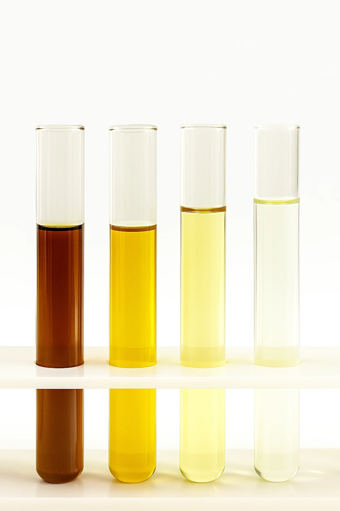
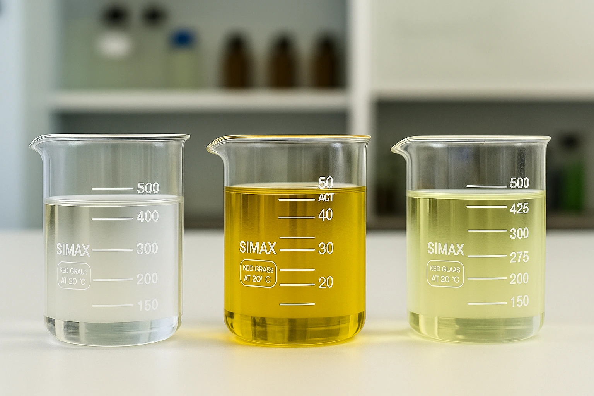
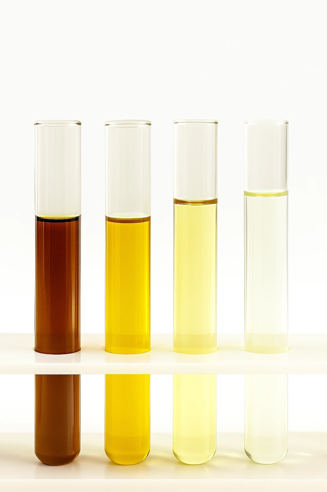
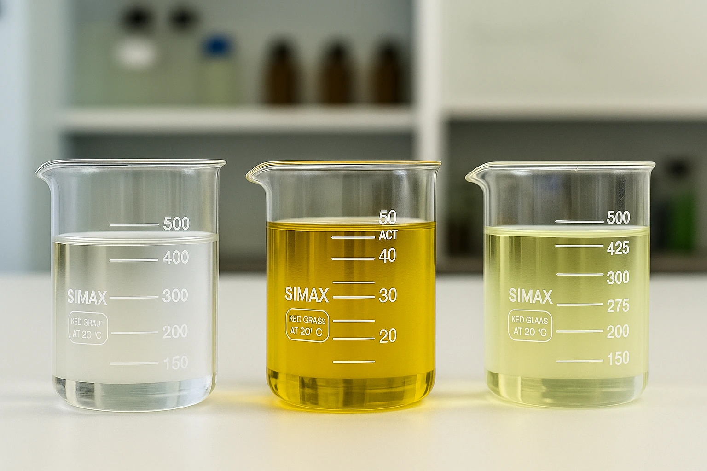

At Misbar, every stage of production is managed under strict process control to ensure product integrity and consistency. Our operations follow international standards in safety, environmental protection, and product testing. Our refining process includes feedstock selection, distillation, desulphurisation, and final polishing to achieve target viscosity, colour, and purity. Samples are tested in our in-house laboratory before release to confirm conformity with client and regulatory specifications. We work under ChemRef Holdings' integrated quality framework, promoting traceability, risk management, and continuous improvement across all plants.
 





Quality management system ensuring consistent product standards.

Environmental management system for sustainable operations.
Occupational health and safety management system.